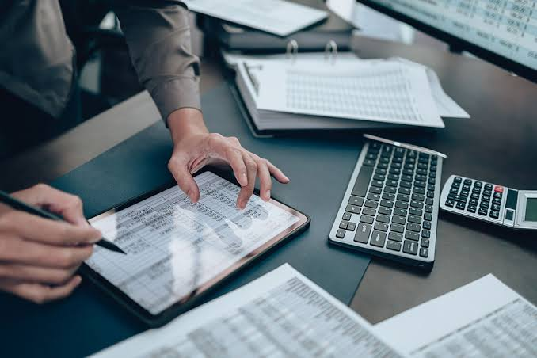
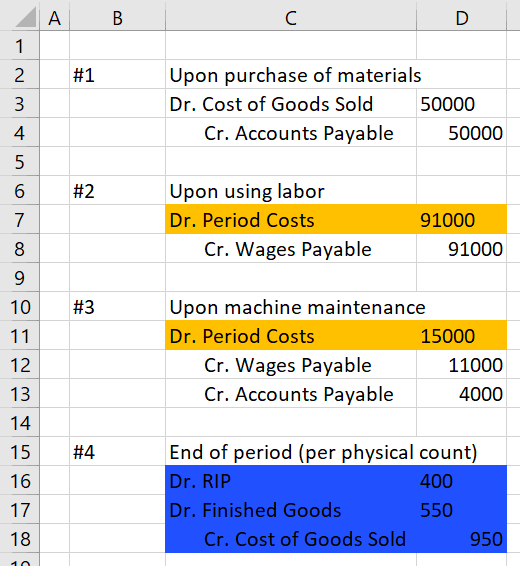
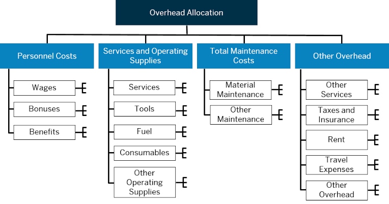
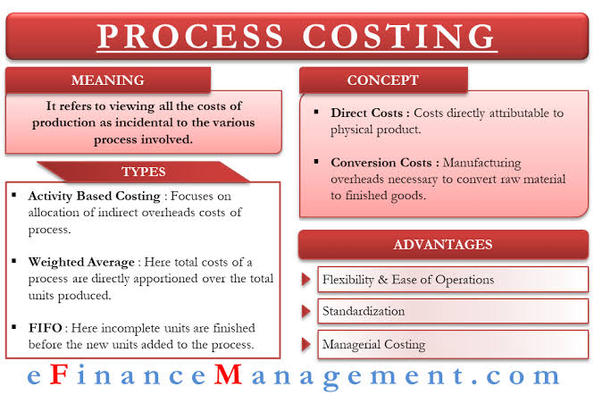
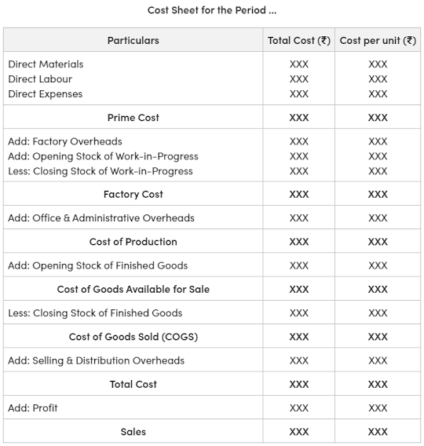
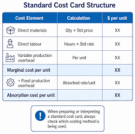

Costing accounting helps businesses control expenses, improve efficiency, and calculate the true cost of producing goods and services.
Introduction to Costing Accounting
Costing accounting is the branch of accounting that deals with the ascertainment, analysis, and control of costs. It focuses on recording, classifying, and allocating costs so that managers can make informed decisions about pricing, budgeting, production planning, and performance evaluation. Unlike financial accounting, which is mainly for external users, costing accounting is designed for internal management. It helps a business understand how much it costs to produce each item, how resources are used, and where losses or waste occur.
Costing accounting is important because it provides information that supports planning and control. A business that knows its costs can price its products competitively, control wastage, improve productivity, and increase profitability. It is widely used in manufacturing, services, construction, and public sector organizations. The information gathered from costing accounting is useful in setting budgets, measuring efficiency, and comparing actual results with expected results.
Costing accounting turns business activity into measurable cost information that guides sound management decisions.
Costing Concepts and Principles
Costing accounting is built on several core concepts. These concepts help accountants identify, measure, and report costs in a consistent way. The main ideas include cost unit, cost centre, cost object, and the classification of costs. These concepts make it possible to assign costs to the right activities and products. They also help management understand the relationship between resources consumed and value created.
Costing principles are based on the idea that all resources used in production have a value, and that value must be traced to the product or service for which they are used. This process requires careful record keeping, accurate measurement, and clear reporting. Costing concepts are especially important in manufacturing businesses where the same factory produces many products and where overheads must be allocated fairly.

Costing concepts provide the framework for identifying and organizing cost information accurately.
Cost unit
A cost unit is a unit of product, service, or activity for which cost is measured. It is the smallest unit for which cost can be determined. For example, in a bakery, the cost unit may be one loaf of bread; in a transport company, it may be one passenger-kilometre or one trip; in a factory, it may be one completed item. Choosing the right cost unit is essential because it helps in comparing costs and setting correct prices.
The cost unit must be appropriate to the nature of the business. A furniture maker may measure cost per chair, while a hospital may measure cost per patient-day. Cost units are used to calculate unit cost and support pricing decisions.
A cost unit gives a clear basis for measuring the cost of one product or service.
Cost centre
A cost centre is a location, department, or activity to which costs are assigned. It could be a machine, a workshop, a production department, or a store. The purpose of a cost centre is to collect costs so that management can monitor performance and identify areas where resources are being used inefficiently. A cost centre helps break down total costs into manageable segments.
For example, in a factory, the cutting department and the finishing department may each be treated as separate cost centres. Costs incurred by each centre are then compared with output or efficiency levels. This makes it easier to control costs and improve productivity.
A cost centre helps managers track where costs are incurred within the organization.
Cost object
A cost object is anything for which costs are gathered for management purposes. It may be a product, a customer order, a project, a department, or a service. Unlike a cost unit, which measures one unit of output, a cost object is broader and may include several units. Cost objects are used to analyze how resources are consumed for specific products or activities.
For example, the cost of manufacturing a school uniform is a cost object, and the cost of specific customer orders or construction contracts can also be treated as cost objects. This helps management understand the cost structure of each product or project.
A cost object links costs to the specific product, service, or activity being analyzed.
Classification of costs
Costs can be classified in different ways depending on the purpose of analysis. They may be classified by nature, function, behavior, or controllability. By nature, costs may be material, labour, or expenses. By function, they may be production, administration, selling, or distribution costs. By behavior, they may be fixed, variable, or semi-variable. By controllability, they may be controllable or uncontrollable. These classifications help management make decisions on pricing, budgeting, planning, and cost control.
Fixed costs remain unchanged in total over a relevant range of output, while variable costs change directly with the level of production. Semi-variable costs contain both fixed and variable elements. Understanding these patterns is essential for decision-making and break-even analysis.
Cost classification helps managers understand how costs behave and how they should be controlled.
Elements of Cost
The elements of cost are the major building blocks of product cost. They are usually grouped into material cost, labour cost, and expenses. These elements represent the major resources consumed in the production process. Every product or service can be analyzed by breaking its total cost into these three categories. This makes it easier to identify where costs arise and how they can be controlled.
Costing accounting requires careful tracking of each element so that the final cost of production is accurate. Any omission or misclassification can produce misleading cost information and poor managerial decisions. Understanding the elements of cost is therefore the first step toward effective costing.

The elements of cost show the basic resources consumed in producing goods and services.
Material cost
Material cost refers to the cost of raw materials and components used in production. It includes the purchase price, freight, carriage, import duties, and handling costs. Materials may be direct or indirect. Direct materials are those that can be easily traced to a specific product, such as timber in furniture-making. Indirect materials are used in the general production process but cannot be directly linked to one unit, such as lubricants or cleaning materials.
Effective material control is essential because materials usually form a significant portion of total cost. Businesses use stock records, inventory controls, and valuation methods such as FIFO and weighted average to manage materials efficiently.
Material cost is often the largest element of cost and must be controlled carefully.
Labour cost
Labour cost is the cost of wages and salaries paid to workers involved in production and related operations. It includes basic wages, overtime, bonuses, employer contributions, and other benefits. Direct labour can be traced to a specific product or job, while indirect labour supports the production process but cannot be linked to a single unit.
Labour cost control requires accurate attendance records, time sheets, and wage analysis. In many organizations, labour productivity and efficiency are key performance indicators because labour costs can significantly affect the competitiveness of the product.
Labour cost reflects both the wages paid and the productivity of workers.
Expenses and overheads
Expenses are costs other than materials and labour that are incurred in the course of production or operations. These may include rent, electricity, insurance, depreciation, and telephone charges. Overheads are indirect costs that cannot be directly traced to a single product. They include factory overheads, administration overheads, selling overheads, and distribution overheads.
Overheads are often allocated to products using suitable bases such as direct labour hours, machine hours, or percentage of prime cost. Proper allocation is important because it affects the final cost of goods and the selling price. Without accurate overhead treatment, the costing records may not reflect the true cost of production.
Overheads are the indirect costs that support production but are not directly tied to one unit.
Costing Methods
Different businesses use different costing methods depending on the nature of production. The main methods include job costing, process costing, batch costing, and contract costing. Each method is suitable for a particular production environment. Choosing the right costing method helps ensure that costs are measured accurately and relevantly for the kind of work being done.
For example, a tailor who produces custom garments may use job costing, while a beverage company may use process costing because its products pass through several continuous stages. These methods allow management to understand unit costs and evaluate control performance.

Costing methods are selected to match the production process and the way costs are incurred.
Job costing
Job costing is used where work is done according to customer specifications and each job is distinct. Typical examples include printing, repair work, furniture production, and construction jobs. Each job is assigned its own costs so that the business can determine the profitability of that job. Job cost sheets are used to record materials, labour, and overheads for each job.
Job costing is useful because it identifies the cost of a specific order and helps management compare actual expenditure with estimated cost. It also supports accurate quotations and helps prevent underpricing.
Job costing tracks the cost of each individual customer order or project.
Process costing
Process costing is used where products are manufactured continuously through a series of processes or departments. It is common in industries such as chemicals, flour milling, textiles, and beverages. Costs are accumulated for each process and then averaged over the units produced. This method is suitable where products are homogeneous and production is repetitive.
Process costing helps management determine the cost of each process and the cost per unit of output. It is particularly useful for large-scale operations where individual unit tracking would be too cumbersome.
Process costing spreads costs across large volumes of identical output.
Batch costing
Batch costing is used where a number of identical units are produced together as one batch. The cost of the whole batch is accumulated and then divided by the number of units in the batch. This method is commonly used in manufacturing clothes, packaged goods, and pharmaceuticals. Batch costing is a practical approach when products are made in groups rather than one-by-one.
The batch method helps management decide on production size, pricing, and cost control. It is especially useful when economies of scale apply.
Batch costing groups identical units together so that cost can be measured efficiently.
Contract costing
Contract costing is used for large, long-term jobs such as building roads, bridges, houses, and large engineering projects. Costs are accumulated for each contract and monitored over its duration. Because contracts can last for months or years, the costing system must include work in progress and profit recognition methods. This approach is particularly important in the construction sector.
Contract costing helps management compare the cost of work done with the contract price and determine whether a project is profitable. It also supports planning, cash flow control, and performance review.
Contract costing is designed for large projects that span a long period of time.
Cost Sheet and Cost Control
A cost sheet is a statement that shows the detailed breakdown of the total cost of production and the cost per unit. It includes direct materials, direct labour, direct expenses, and overheads. Cost sheets are valuable for management because they show the structure of costs and make it easier to compare actual cost with estimated cost. They are also used for quotation purposes and pricing decisions.
Cost control refers to the process of keeping costs within acceptable limits. It involves planning, monitoring, comparing actual costs with standards or budgets, and taking corrective action where necessary. A strong cost control system improves profitability and helps prevent waste.

The cost sheet summarizes the cost structure of a product or service in a clear and useful form.
Prime cost
Prime cost is the sum of direct materials, direct labour, and direct expenses. It represents the main costs directly attributable to the production of goods or services. Prime cost is important because it forms the basis for determining the cost of production before overheads are added. It helps management focus on the direct costs that are most controllable.
Prime cost captures the direct costs tied to producing one unit or job.
Factory cost
Factory cost is the total cost incurred in converting raw materials into finished products before administration and selling expenses are taken into account. It includes prime cost plus factory overheads. This cost helps management evaluate manufacturing efficiency and the cost of production at the factory stage.
Factory cost shows the production cost of goods before selling and administration costs are added.
Cost of production
Cost of production includes factory cost plus administration overheads. It reflects the total cost of turning materials into products ready for sale. It is an important measure because it helps management understand the overall cost incurred in the production function before selling activities begin.
Cost of production captures the full manufacturing cost before selling and distribution are considered.
Cost of sales
Cost of sales is the total cost of goods sold during a period. It includes the cost of production plus selling and distribution expenses that are directly related to the sale of products. Cost of sales is essential for evaluating profit because profit is determined by comparing sales revenue with cost of sales. If cost of sales rises faster than sales, profitability falls.
Cost of sales connects production cost with the revenue earned from selling products.
Marginal and Standard Costing
Marginal costing and standard costing are important tools for planning and control. Marginal costing focuses on variable costs and helps management make short-term decisions such as pricing, product mix, and acceptance of special orders. Standard costing compares actual costs with pre-set standards and identifies variances. Both methods support better decision-making and performance evaluation.
These techniques are widely used because they focus on changes in costs and deviations from plans. They help managers react quickly to changing market conditions and operational challenges.

Marginal and standard costing provide practical tools for planning, control, and decision-making.
Contribution margin
Contribution margin is the amount that remains after subtracting variable costs from sales revenue. It contributes toward covering fixed costs and generating profit. The contribution margin is a very useful measure in marginal costing because it shows how much each sale helps the business after covering variable expenses.
Contribution margin shows how much revenue remains to cover fixed cost and profit.
Break-even analysis
Break-even analysis identifies the level of sales at which total revenue equals total cost. At this point, the business makes neither profit nor loss. It is an important decision-making tool because it helps management determine the minimum output or sales needed to avoid losses. Break-even analysis is widely used in pricing, budgeting, and planning.
Break-even analysis reveals the minimum level of activity needed to avoid loss.
Variance analysis
Variance analysis compares actual costs with standard or budgeted costs to identify differences. A variance may be favorable or unfavorable depending on whether actual cost is lower or higher than expected. Variance analysis helps management investigate the causes of deviations and take corrective action. It is a central tool in standard costing.
Variance analysis highlights where actual performance differs from planned performance.
Budgeting
Budgeting is the process of setting financial plans and targets for a future period. Budgets may cover sales, production, materials, labour, overheads, and cash. Budgeting helps organizations allocate resources, coordinate activities, and ensure that operations are carried out within agreed limits. It also provides a basis for performance comparison and control.
When actual results are compared with the budget, management can identify deviations and understand whether corrective action is necessary. Budgeting is therefore a key part of cost control and planning.
Budgeting converts plans into measurable financial targets for the organization.